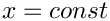
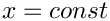

In this document we demonstrate how to generate unstructured tetrahedral meshes for oomph-lib, based on the output from Hang Si's open-source mesh generator Tetgen . The mesh generation is performed in a two-stage process. First we use Tetgen to generate the mesh "offline". Then we process the output files generated by
Tetgen to generate an oomph-lib mesh.
Quick guide for the use of Tetgen
The Tetgen home page contains a comprehensive User's Guide for the code and its many options, therefore we only present a brief overview of the code's most basic usage.
Tetgen creates the mesh based on the information about the mesh boundaries provided in an input file, filename.poly, say. By default, three output files, filename.1.node, filename.1.ele, and filename.1.face are created. They contain the information about the nodal positions, the element connectivity lists and the boundary faces respectively.
The input file format
The input file for Tetgen usually has the extension *.poly and has the following format:
|
Node list First line: [number of nodes] [dimension (must be 3)] [number of attributes] [number of boundary markers (0 or 1)] One line: [number of facets] [boundary markers (0 or 1)] One line: [number of holes] Region attributes list One line: [number of region] |
Comments:
- The data between [ ] must be provided. The attributes and boundary markers must only be specified if the corresponding number of boundary markers or the number of attributes is nonzero.
- Boundary markers can be used to identify which nodes are located on which domain boundaries. If domain boundaries are to be identified the number of boundary markers should be set to 1, otherwise it must be set to zero. If the number of boundary markers is set to 1, boundary markers must be specified for every node and facet. A boundary marker 0 should be used for nodes that are not located on domain boundaries; a boundary marker
b+1should be used to indicate that a node is located on the mesh boundarybin the finaloomph-libmesh. oomph-libdoes not use the "attributes" so their number should be set to zero.- The boundary markers have to be specified in the node list AND in the facet list.
- If a node is located on multiple boundaries, the boundary marker of the node is chosen arbitrarily.
- Holes are identified by the coordinates of a single point in their interior. The holes in the facet list are holes in the facet, they are different from the holes in the hole list, which are holes in the volume.
See the Tetgen home page for further information.
How to run Tetgen
To create the mesh from a given input file the command is
With these commands, Tetgen will generate as few tetrahedra as possible. Finer meshes may be generated by imposing additional constraints via command line arguments. For instance
- A maximum tetrahedron volume can be specified with
-an where n is the maximal volume wanted. (There is no space between-aand the number specifying the volume!) - ...
Again, we refer to the
Tetgen home page for a comprehensive listing of all available options.
How to visualise a mesh generated by Tetgen
To visualise the mesh, the program tetview (distributed with Tetgen ) can be used.
An example: A cube with a cube hole
To illustrate the procedure, we demonstrate how to generate a mesh for the cube domain with a hole shown in the figure below. Note that the node numbers correspond to those in the Tetgen input file. Boundary 1 is shown in blue; boundary 2 in magenta. In the corresponding oomph-lib mesh, the boundaries are numbered from zero.

Here is a listing of the corresponding input file, cube_hole.poly:
The output files that Tetgen creates with the command
are cube_hole.1.node , cube_hole.1.ele and cube_hole.1.face.
Here is a sketch of the resulting discretisation, as displayed by tetview :

Creating an oomph-lib mesh based on output files generated by Tetgen
oomph-lib provides a mesh, TetgenMesh, that uses the output from Tetgen to generate an unstructured oomph-lib Mesh containing elements from the TElement<3,NNODE_1D> family of the tetrahedral elements. The relevant interface is:
Example 1: A Poisson problem
The driver code mesh_from_tetgen_poisson.cc demonstrates the use of this mesh for the solution of a 3D Poisson problem in the "cube domain with a hole", described in the previous section.
The code expects the names of *.node, *.ele and *.face files generated by Tetgen as command line arguments and stores them in the namespace CommandLineArgs
The names of these files are then passed to the mesh constructor. Since the rest of the driver code is identical to that in the corresponding example with a structured mesh, we do not provide a detailed listing but simply show the plot of the computed results, together with a plot of the exact solution, for linear (four-noded) elements

...and quadratic (ten-noded) elements:

Example 2: A Navier-Stokes problem
The driver code mesh_from_tetgen_navier_stokes.cc demonstrates the use of a TetgenMesh for the solution of a 3D Navier-Stokes problem in the same geometry as in the previous example. We apply no-slip boundary conditions on the central hole and impose a unit vertical velocity. On the outer boundaries we pin the  and
and  velocity components and set them to zero, while leaving the axial velocity unspecified. The resulting flow field, shown in the figure below, corresponds to the flow that is generated when the rigid block in the centre of the domain rises vertically inside a rigid duct with "slippery walls". The duct is open at the ends , where parallel, axially-traction free outflow is imposed. The various slices show pressure contours and the in-plane velocity vectors.
velocity components and set them to zero, while leaving the axial velocity unspecified. The resulting flow field, shown in the figure below, corresponds to the flow that is generated when the rigid block in the centre of the domain rises vertically inside a rigid duct with "slippery walls". The duct is open at the ends , where parallel, axially-traction free outflow is imposed. The various slices show pressure contours and the in-plane velocity vectors.

Comments and Exercises
Checking the boundary numbers
We re-iterate that Tetgen does not allow nodes to be located on multiple boundaries. It is therefore important to check the boundary numbers allocated by Tetgen , e.g. by using the function Mesh::output_boundaries(...). Boundary nodes should always be placed on the boundary with the most restrictive boundary conditions. If this is not possible, some post-processing of the mesh may be required.
Higher-order tets
Currently, TetgenMesh can only be used to generate four and ten-node tets (i.e. tets with tri-linear and tri-quadratic shape functions). It should be easy to generalise the "scaffold-mesh"-based mesh generation procedure to higher-order elements but this has not been done yet. Any volunteers?
Exercises
- Download and install
Tetgen, , and create your own meshes. - Experiment with the options that allow the specification of maximum element volumes etc.
Source files for this tutorial
- The source files for this tutorial are located in the directory:
demo_drivers/meshing/mesh_from_tetgen/
- The driver code is:
demo_drivers/meshing/mesh_from_tetgen/mesh_from_tetgen_poisson.cc
PDF file
A pdf version of this document is available.